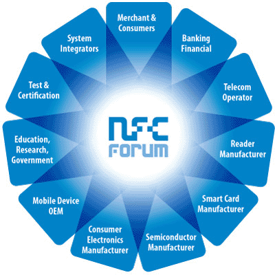

The NFC Ecosystem
The potential for NFC applications and products is broad and deep, whether you’re leveraging the promise of peer-to-peer Bluetooth communications, developing payment system applications, or creating the chips that will enable upcoming NFC-based products.
The NFC Forum Helps Build the Ecosystem
The Forum’s membership covers all parts of the NFC ecosystem. These companies share their development, application, and marketing expertise to develop the best possible solutions for advancing the use of NFC. All decisions are approved by the voting membership to ensure that a wide range of perspectives are included in order to build a firm and flexible foundation for all future NFC market growth.
The NFC Forum’s membership includes organizations from every sector of the NFC ecosystem
Participate in the NFC Forum
The NFC Forum welcomes participation from all organizations interested in helping to build the NFC market and ecosystem.
By joining the 130 members of the NFC Forum and taking advantage of numerous opportunities to meet each year at NFC Forum meetings and Forum sponsored events, you will be able to build relationships, partnerships, and a wealth of business opportunities.